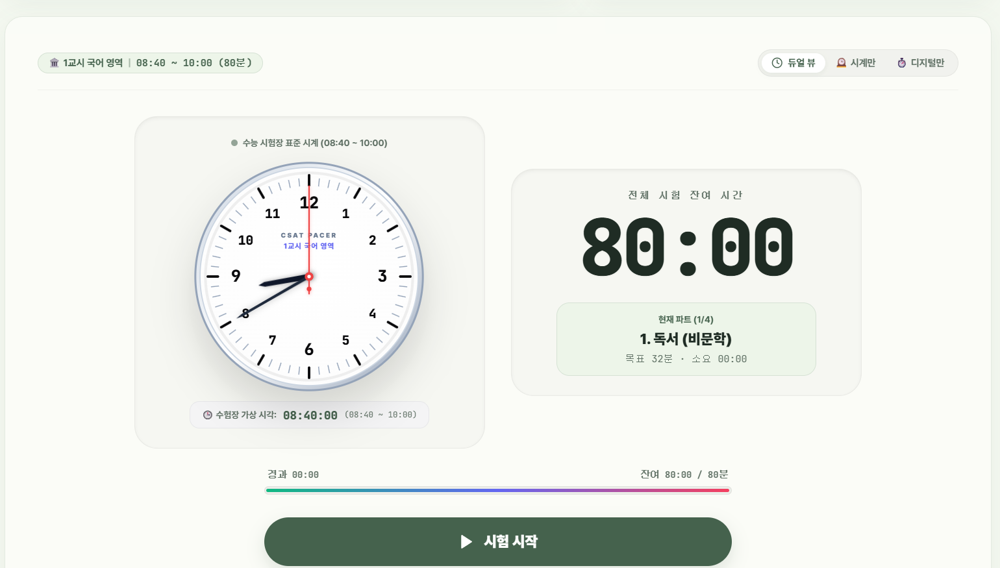
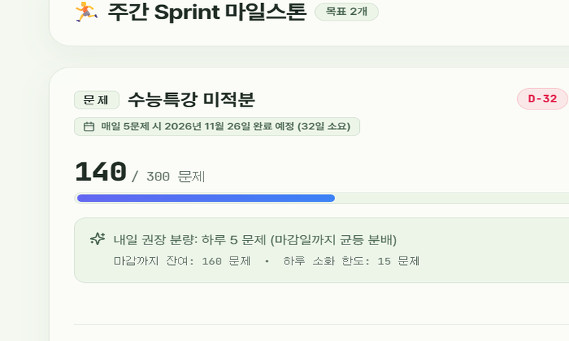
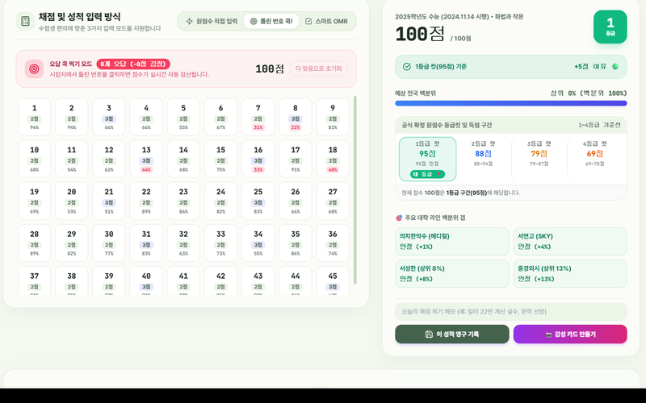
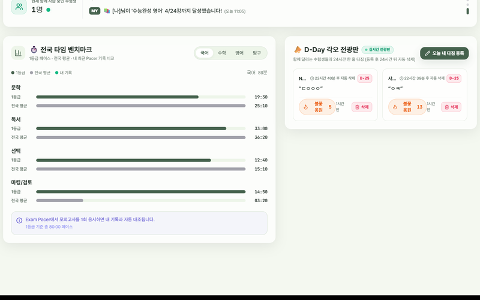

듀얼코어 콕핏 DualCore Cockpit
공부할 때 필요한 모든 도구를 하나의 화면에 쏙!
수능 실전 모의고사 타이머, 적응형 주간 플래너, 스마트 채점 통합 플랫폼
왜 만들었는가?
스톱워치 따로, 플래너 따로, 채점기 따로... 앱을 여러 개 번갈아 켜며 공부하는 게 너무 비효율적이고 집중도 흐트러졌습니다.
수험생에게 꼭 필요한 4가지 핵심 도구
실전 모의고사 타이머 (Exam Pacer)
수능 시험장 실제 아날로그 시계판과 디지털 타이머 실시간 동기화. 독서실용 무음 시각 알림과 실수 방지 3초 되돌리기 탑재.

적응형 주간 플래너 (Adaptive Sprint)
계획 지연 시 3-Way 최적 대안 재배분. 목표 잔여량 기반 "매일 N강 소화 시 완주 예정일"을 실시간 뱃지로 산출.

기출 등급컷 & 스마트 OMR 채점
역대 수능·모의평가 확정 등급컷 데이터 내장. 원점수·틀린번호·OMR 방식으로 빠르게 채점하고 내 전국 백분위 추이를 그래프로 분석.

6자리 PIN 동기화 & 실시간 라운지
로그인 없이 6자리 PIN으로 PC·태블릿·폰 즉시 동기화. "현재 함께 자습 중인 수험생 수" 실시간 집계 및 24시간 응원 전광판.

개발 중 겪은
문제와 극복
개발을 진행하면서 만들고 싶은 기능이 계속 추가되다 보니, 이것저것 뒤섞여 앱의 핵심 목적이 무엇인지 모호해지는 위기를 겪었습니다.
많은 고민 끝에 불필요한 기능들은 과감히 덜어냈습니다. 수험생의 핵심 일과인 '실전 모의고사 훈련'과 '주간 진도 관리'라는 두 개의 기둥(듀얼코어)에 집중하여 모든 기능을 깔끔하게 정리했습니다.
AI와 페어 프로그래밍
아이디어를 구체화한 후 Google Antigravity 3.8 Flash High 모델과 실시간 협업하며 빠르고 탄탄하게 완성했습니다.
실전 풀스택 개발 경험
React 모듈형 컴포넌트, Firebase 실시간 DB, GitHub 버전 관리, Vercel 클라우드 무중단 배포를 실전 습득했습니다.
결과 매우 만족 & 다음 도전
상상했던 앱을 직접 만들어 매우 만족스럽습니다. 다음에는 더 실용적이고 큰 규모의 대형 프로젝트에 도전하겠습니다!